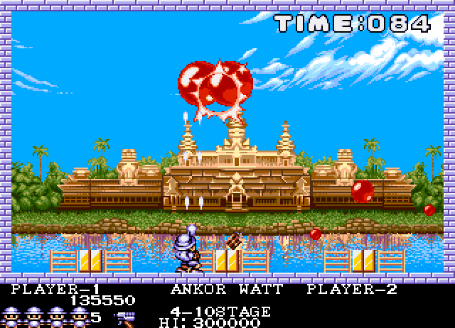

Build a game with Fable
in 45 minutes
Tomasz Heimowski http://theimowski.com


@theimowski
Agenda
- What
- Why
- Demo
- Q&A
Slides available at

These are not goals
- see clean code
- praise functional purity
- understand every line of code
- admire my fast typing
These are the goals
- interop with JS libraries
- use mutability to gain on performance
- see Fable in action
- have fun
Starting point
- Game prototype built by @alfonsogarciacaro
- SAFE Template with Azure App Service and Fable.Remoting
- mainloop.js and matter.js
- Imports/modules: Canvas, Matter, Physics
- Server side for high scores
- Boilerplate to render a player on board
Milestones
- Move player with buttons
- Add first ball to board
- Firing the harpoon
- Shooting and splitting balls
- Counting score
- Handling game over
- Restart game automatically
- High scores
- Ship it!
Thank you
Source code: https://github.com/theimowski/pang-game-test